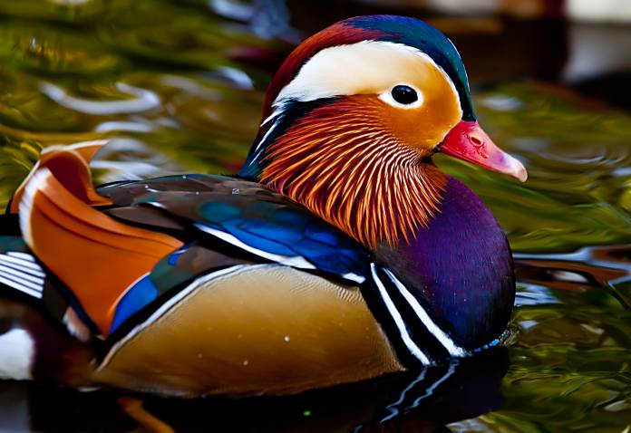

Sobre Nosotros

David Romero
Apasionado por descubrir nuevos destinos y capturar momentos únicos, David es el encargado de diseñar rutas originales para nuestros clientes. Siempre está buscando experiencias locales auténticas y lugares fuera del radar.
üëâ Especialidad: planificaci√≥n de viajes culturales y fotograf√≠a de viajes.
Daniel García
Explorador de alma y mente estratégica, Daniel lidera la parte tecnológica y de logística de la agencia. Su objetivo es que cada viaje esté perfectamente coordinado, sin sorpresas ni contratiempos.
üëâ Especialidad: organizaci√≥n de viajes personalizados y viajes de aventura.